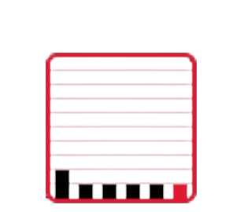

Welcome to the UMD Campus Pantry
Now open at South Campus Dining Hall at the University of Maryland!
Approximately 20 percent of University of Maryland students lack reliable access to sufficient quantities of affordable and nutritious food.
Join us in creating a hunger free UMD.
- The UMD Campus Pantry is open to help students, faculty and staff experiencing food insecurity.
- Swipe your UID before entering and check out before leaving.
- Be sure to bring a reusable bag.
Join Us Today
Pantry Hours
- Monday - Friday: 10:00 AM - 5:00 PM
- Saturday - Sunday: Closed
Pantry Activity
Live Activity - Last 25 Minutes
Campus Pantry
Hunger Free Workgroup
- Based on results of the Food Access and Student Well-Being Study, and recommendations developed by the Fall 2018 INNOVO Scholars, the University of Maryland created a Hunger-Free Workgroup focused on combating food insecurity and confounding issues with the goal of creating a hunger-free campus.
- All members of the UMD community are welcome to fill out this form for more information.
Work with Us
Working with the us isn’t just giving food, it provides hope, community, and a reminder that no one should face hunger.
How Students Can work with Us
Student Employment Opportunities
- Student team members work approximately 10 hours per week.
- Students work during Campus Pantry operating hours, including donation and food sorting shifts and food distributions. View application here
- If you have questions about the available opportunities email campuspantry@umd.edu.
Volunteer Work
- UMD Campus Pantry volunteers help with distributions, setting-up the Pantry, stocking shelves, checking in clients and answering visitor questions.
- Hour-long slots are available for sign-up.
- The Campus Pantry partners with Terps For Change to provide additional volunteer opportunities.
- Volunteers commit to a semester of weekly community service.
- Terps For Change offers a wide array of community service sites (including the Campus Pantry) coupled with eight weekly dialogues where students reflect on and explore social issues related to service.
Food Drives
- Organizing food drives in your residence hall, club, organization or office is a great way to help community members in need.
- When you are ready to host a food drive contact us at campuspantry@umd.edu or 301-405-9579.
Find Us
Physical Location
Campus Pantry Location
We are located under the South Campus Dining Hall, stairs to the left of the main entrance.
Contact Information
Contacts
- Email: campuspantry@umd.edu
- Phone: 301-405-9579
Pantry Hours
Pantry Hours
- Monday - Friday: 10:00 AM - 5:00 PM
- Saturday - Sunday: Closed
Donation Opportunities
Food Donations
- To purchase food items for the UMD Campus Pantry, please use the Donation Registry.
- Please package donations in a bag or box.
- Drop off non-perishable food donations at the UMD Campus Pantry welcome desk anytime they are open.
- If you have a donation that is too large to carry to the UMD Campus Pantry or are interested in donating items other than non-perishable foods, please contact campuspantry@umd.edu to inquire about special pickup.
Monetary Donations
- For monetary gifts, please use the Giving Site.
- Once on the site ensure the is dropdowns are set to "Division of Student Affairs" and "Campus Food Pantry Fund", before entering in your desired donation amount
- Thank you!, We greatly appreciate your support!
Resources
The UMD Campus Pantry offers a variety of resources
Teaching Kitchen
- The UMD Campus Pantry team partners with students, faculty, staff and other organizations to offer classes and educational programming in our new teaching kitchen.
- Workshops have included the benefits of gardening, how to use up fresh fruits and vegetables and practicing key cooking skills.
Terp Resource Room
- The UMD Campus Pantry offers a Terp Resource Room that students can reservations.
- You can use the Terp Resource Room as a private room to access remote services either on-campus (counseling, nutrition, wellness, etc.) or off-campus (SNAP, WIC).
- You can reserve the Terp Resource Room here.